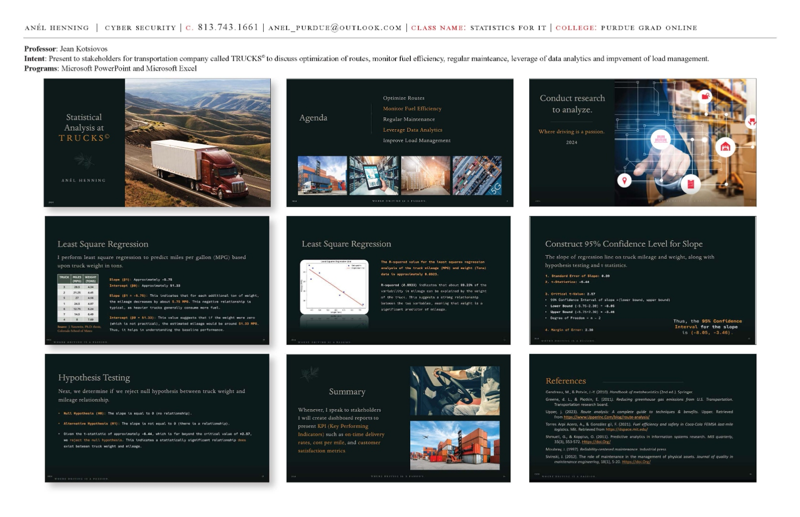
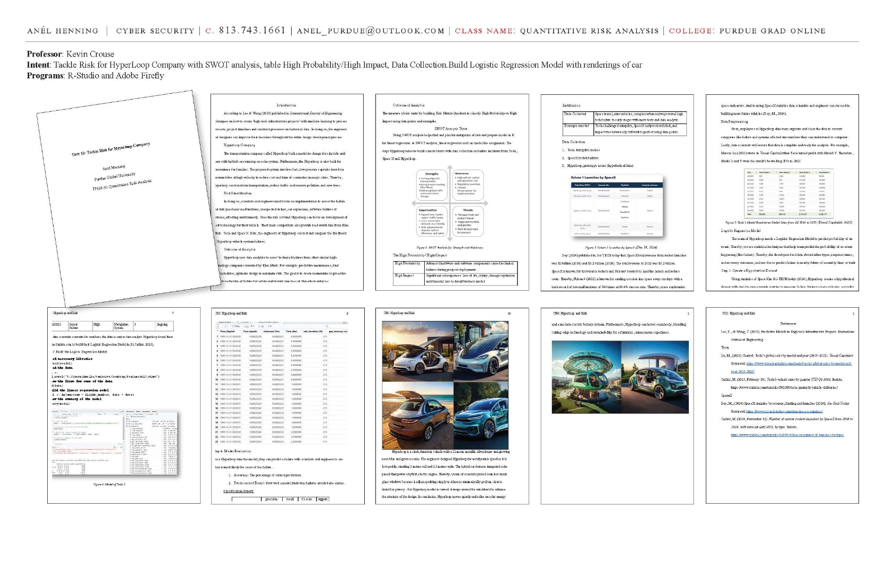

Editorial ad layout
Purdue Graduate Online
Purdue Graduate Program Campaign
Use the Purdue-branded title pages and class identity system as the basis for a polished full-page and half-page recruitment ad campaign. The recurring masthead, program naming, and author block provide a consistent visual language for print promotion.
- Best deliverables: full-page ad, half-page adaptation, quarter-page teaser
- Skill shown: hierarchy, campaign consistency, CTA placement, academic-brand handling